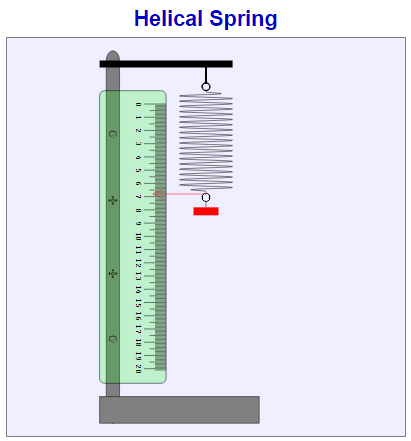

1. परिचय:
हेलिकल स्प्रिंग प्रयोग उपकरण का उपयोग स्प्रिंग की प्रत्यास्थता (Elasticity) और हुक के नियम (Hooke’s Law) की परिक्षण के लिए किया जाता है। यह उपकरण स्प्रिंग स्थिरांक (Spring Constant) को निर्धारित करने और बल-लंबाई के संबंध को समझने में सहायता करता है। हेलिकल स्प्रिंग के खिंचाव का अनुपात भार के सीधे अनुपात में होता है, जब तक प्रत्यास्थता की सीमा (Elastic Limit) पार न हो। इस उपकरण का उपयोग विभिन्न इंजीनियरिंग और भौतिकी प्रयोगों में किया जाता है।
2. उपकरण के प्रमुख घटक:
1. हेलिकल स्प्रिंग (Helical Spring):यह धातु की बनी होती है और लोड के अनुसार खिंचती या संकुचित होती है।
2. स्टैंड और क्लैंप (Stand & Clamp):स्प्रिंग को ऊर्ध्वाधर स्थिर रखने के लिए उपयोग किया जाता है।
3. लोडिंग हुक (Loading Hook):स्प्रिंग में भार लगाने के लिए हुक लगा होता है।
4. वजन सेट (Weight Set): विभिन्न द्रव्यमान वाले भार स्प्रिंग पर लगाए जाते हैं।
5. मीटर स्केल (Meter Scale): स्प्रिंग के बढ़ाव को मापने के लिए उपयोग किया जाता है।
3. कार्यप्रणाली:
1. स्टैंड पर हेलिकल स्प्रिंग को क्लैंप की मदद से लटकाया जाता है।
2. बिना किसी भार के स्प्रिंग की प्रारंभिक लंबाई को स्केल से नोट किया जाता है।
3. धीरे-धीरे अलग-अलग भार स्प्रिंग पर लगाए जाते हैं और प्रत्येक भार के साथ स्प्रिंग का लम्बाई वृध्दि को मापा जाता है।
4. हुक के नियम के अनुसार, F = kx (जहाँ, F = लगाया गया बल, k = स्प्रिंग स्थिरांक, x = बढ़ाव) के आधार पर स्प्रिंग स्थिरांक निकाला जाता है।
5. डेटा को ग्राफ पर प्लॉट करके स्प्रिंग के व्यवहार का अध्ययन किया जाता है।